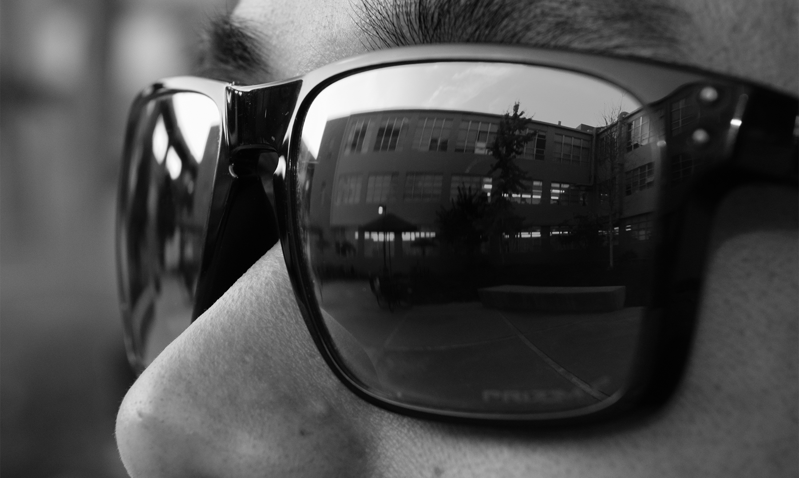

(Photograph courtesy of S. Wong of SJSU)
Hyper motivated digital artist with over eight years of experience with multiple mediums and systems. Inspired by bold, edgy, and precise design philosophies. Multilingual, with vast amount of applicable knowledge and experiences with Asian cultures including: Cantonese, Mandarin, and Vietnamese.
My passion for art stems from the fact that their visual fantasy belies the real world power in which they hold.
In science fiction, technology is often depicted as the next step in human evolution. Though interesting to me, my personal experience has made me more acutely aware of the ways technology can help those struggling with impairments and disabilities. With art, I am able to dream of a future where technology acts as the ultimate equalizer, empowering those who need it most.